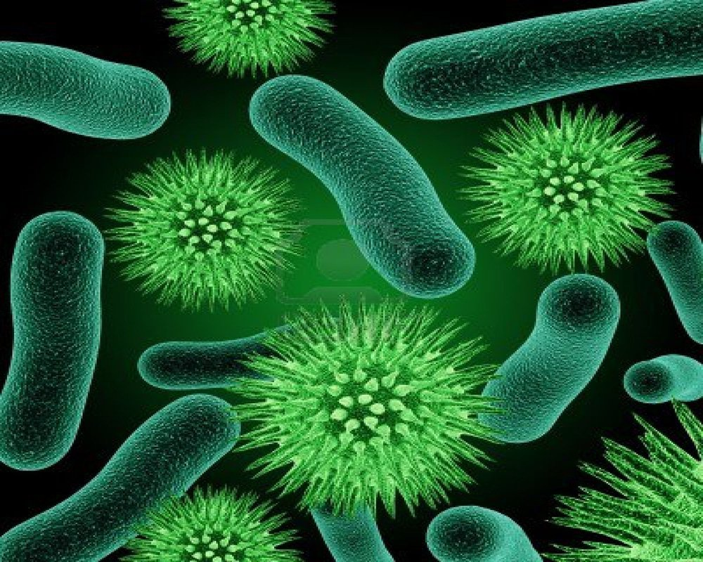
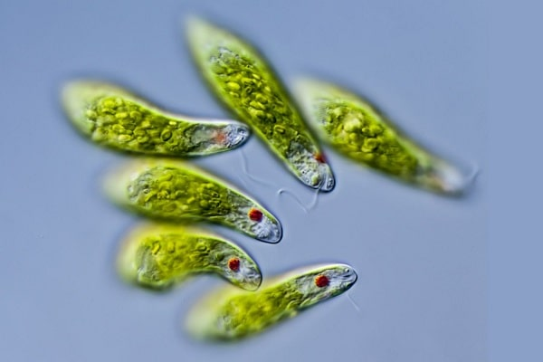
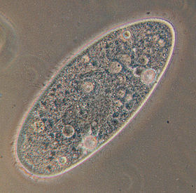
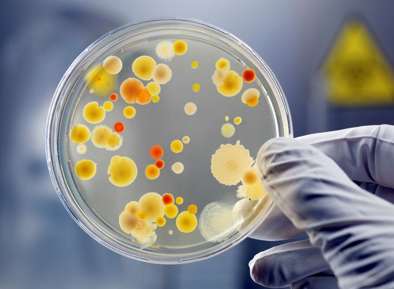

CÁC LOÀI VI SINH VẬT!
Trông Kì Quái Qúa, Phải Đi Tìm Hiểu Ngay Thôi!
Vi sinh vật là những sinh vật đơn bào hoặc đa bào nhân sơ có kích thước rất nhỏ, không quan sát được bằng mắt thường mà phải sử dụng kính hiển vi.Thuật ngữ vi sinh vật không tương đương với bất kỳ đơn vị phân loại nào trong phân loại khoa học.
Nó bao gồm cả Vi khuẩn (bao gồm cả Cổ khuẩn), nấm, tảo và động vật nguyên sinh.
 Vi khuẩn lam (danh pháp khoa học: Cyanobacteria), thường được gọi là tảo lam hay tảo lục lam Lee R. E. (2008). Phycology., là một ngành vi khuẩn có khả năng quang hợp[4].
Tên gọi "cyanobacteria" có nguồn gốc từ màu sắc của các loài vi khuẩn này (tiếng Hy Lạp: κυανός (kyanós) = lam).
Bằng việc tạo ra oxy ở dạng khí như là một phụ phẩm của quá trình quang hợp, các vi khuẩn lam được người ta cho là đã chuyển đổi khí quyển mang tính khử ở thời kỳ đầu thành khí quyển mang tính oxy hóa,
một công việc đã thay đổi mãnh liệt thành phần sự sống trên Trái Đất bằng sự kích thích đa dạng sinh học và dẫn tới sự gần như tuyệt chủng của các sinh vật không chịu được oxy.
Theo thuyết nội cộng sinh, các lục lạp được tìm thấy trong thực vật và tảo nhân chuẩn đã tiến hóa từ các tổ tiên là vi khuẩn lam thông qua cơ chế nội cộng sinh.
 Chi Trùng roi xanh (Euglena) là một chi sinh vật nguyên sinh đơn bào.
Nó là chi được biết đến và được hiểu rõ nhất trong lớp Euglenoidea, một nhóm đa dạng gồm 54 chi và ít nhất 800 loài.[3][4] Các loài Euglena sống trong nước ngọt, ao, hồ, đầm ruộng, kể cả vũng nước mưa.
Chúng phổ biến trong vùng nước ngọt, chúng có thể sinh sôi đến số lượng đủ để làm đổi màu vùng nước thành màu xanh lá cây
 Trùng đế giày (còn gọi là Paramecium, trùng cỏ, trùng giày hay thảo trùng) là đại diện của lớp Trùng cỏ.
Tế bào trùng đế giày đã phân hóa thành nhiều bộ phận. Mỗi bộ phận đảm nhận một chức năng sống nhất định.
Trùng đế giày được con người biết đến trước tiên trong thế giới động vật đơn bào.
Khi chế tạo được kính hiển vi, người ta thử lấy nước "cỏ ngâm" soi thì tình cờ phát hiện ra chúng và vì thế được gọi là "trùng cỏ".
Ngày nay "trùng cỏ" trở thành tên chính thức cho nhóm động vật này và nước "cỏ ngâm" vẫn là môi trường nuôi cấy trùng cỏ lý tưởng ở phòng thí nghiệm.
 Men là các loài nấm đơn bào, với một số ít các loài thường được sử dụng để lên men bánh mì hay trong sản xuất các loại đồ uống chứa cồn, cũng như trong một số mẫu tế bào nhiên liệu đang thử nghiệm.
Phần lớn các loài men thuộc về ngành Nấm túi (Ascomycota), mặc dù có một số loài thuộc về ngành Nấm đảm (Basidiomycota).
Một số ít các loài nấm, chẳng hạn như Candida albicans, có thể gây bệnh ở người (Candidiasis). Trên 1.000 loài men đã được miêu tả.
Loài men được con người sử dụng phổ biến nhất là Saccharomyces cerevisiae, nó được dùng để sản xuất rượu vang, bánh mì và bia từ hàng nghìn năm trước.